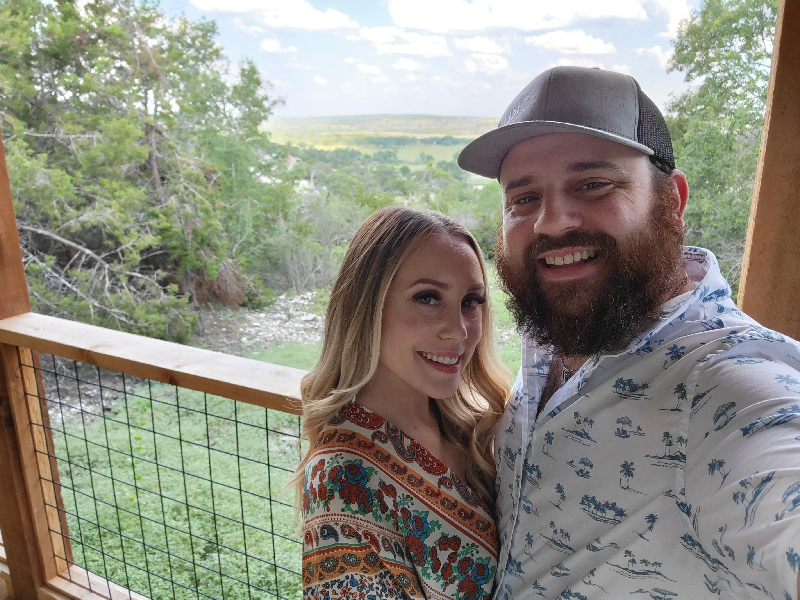

About Me
Hi! Thank you for stopping by. My name is Colton Ancell. I was born in Lubbock, TX and since then have lived in Oklahoma City, El Paso, and Austin. I spent many years in the restaurant management business, working with a high-volume Tex-Mex full service concept based out of Austin. After opening three new locations for them, I jumped industries into the tech space where I currently work for a back-office restaurant ERP platform. My daily role involves helping new clients to set up and implement our software package to make running their restaurants in conjunction with their financials as easily as possible.
My professional passion lies in teaching and creating solutions to day-to-day problems people face, and helping those in restaurants is the way I feel like I can give back to a group of people that deserve some TLC. Outside of work, I enjoy watching the weather, amateur radio, and working on software side-projects. I currently live in Central Texas with my beautiful girlfriend, our Yorkie Hank, and our cat Rain. Please feel free to take a look at my development work showcased below, and feel free to reach out using the contact methods listed here. Thanks again, and as we say in the radio world, 73!
My Projects


Contact Me
I can be reached on most major social media networks. Additionally, feel free to visit my Github page for a showcase of my contributions to open-source projects.